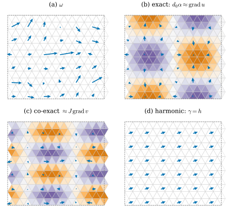
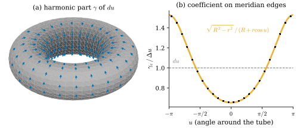

45.1 Hodge Decomposition
Goals
- inner product space에서 linear map의 image와 adjoint의 kernel이 서로 orthogonal complement임을 증명하고, \(BA = 0\)인 두 map이 가운데 공간을 세 조각으로 나누는 것을 증명할 수 있다.
- 닫힌 surface 위의 1-form을 exact, co-exact, harmonic 성분으로 나누는 Hodge decomposition을 진술하고, vector field 판 \(X = \grad u + J\grad v + h\)의 각 성분을 해석할 수 있다.
- mesh 위의 discrete Hodge decomposition \(\R^{n_1} = \im d_0 \oplus \im\star_1^{-1}d_1^{\mathsf T} \oplus \mathcal{H}\)을 증명하고, 두 번의 Poisson solve로 계산할 수 있다.
- discrete harmonic 1-form이 cohomology class를 하나씩 대표하고 그 dimension이 \(2g\)임을 증명하며, \(\star_1\)의 부호가 이 이론의 어느 부분에 필요한지 말할 수 있다.
Prerequisites
- Definition 36.6.2 (discrete codifferential), Proposition 36.6.3 (\(d^*\)는 \(d\)의 adjoint), Definition 36.6.6 (cotan Laplacian \(L = -d_0^{\mathsf T}\star_1d_0\))
- Lemma 36.4.12, Proposition 36.4.13 (closed modulo exact의 dimension), Definition 36.5.14 (diagonal Hodge star), Definition 36.5.2 (dual form)
- Definition 35.5.6, Theorem 35.5.8 (codifferential과 그 부호)
- Definition 43.3.1 (complex structure \(J\)), Proposition 43.4.1 (\(\star\alpha = -\alpha\circ J\)), (43.4.1) (surface 위의 L2 inner product)
- Proposition 42.6.1 (닫힌 mesh의 Poisson 문제), Corollary 42.3.6 (\(-L\)은 모든 mesh에서 positive semidefinite)
Motivation
Chapter 44는 geodesic을 따라 vector를 옮기는 규칙((44.3.4), Exercise 44.5.5)을 보았고, heat method로 거리를 구하는 것으로 끝나며 질문 하나를 남겼다. 거리 대신 vector를 옮기는 규칙을 mesh 전체에서 일관되게 정해, 원하는 모양의 vector field를 만들 수 있는가(Section 44.6의 끝, Chapter 44의 Open question)? 이 장은 그 질문에 두 단계로 답한다. 먼저 이미 주어진 vector field를 이해하는 법, 곧 field를 몇 개의 단순한 조각으로 나누는 법을 본다(Section 45.1–45.2). 그다음 field를 직접 설계하는 법을 본다. field 대신 “옮기는 규칙”(connection)을 정하고, 그 규칙의 curvature를 어디에 둘지 고르는 방법이다(Section 45.3–45.4).
flat torus(평평한 토러스) 위에 아무렇게나 준 1-form(Figure 45.1.1(a))을 보자. 그 안에는 성격이 다른 세 성분이 섞여 있다. 첫째는 어떤 함수가 커지는 쪽으로 곧장 향하는 성분(gradient)이고 어느 점 둘레로도 돌지 않는다. 둘째는 어떤 함수의 등위선을 따라 도는 성분이고 어디서도 새로 생기거나 사라지지 않는다. 셋째는 torus를 한 방향으로 감고 도는 고른 성분이고, 앞의 두 꼴 어느 쪽으로도 쓸 수 없다. 이 셋째 성분은 surface의 “구멍”에서 온다. 이 절은 이 세 조각의 분해가 inner product space의 linear algebra 하나로 smooth surface와 mesh에서 똑같이 성립함을 보인다. 필요한 계산은 Chapter 42의 Poisson solve 두 번이다.
Splitting a Vector Space
분해의 뼈대는 기하가 아니라 linear algebra다. finite-dimensional vector space \(U, V\)에 inner product \(\langle\cdot, \cdot\rangle_U\), \(\langle\cdot, \cdot\rangle_V\)가 있고 \(A\colon U \to V\)가 linear map이라 하자. 모든 \(x \in U\), \(y \in V\)에서 \(\langle Ax, y\rangle_V = \langle x, A^*y\rangle_U\)인 linear map \(A^*\colon V \to U\)를 \(A\)의 adjoint map(수반사상), 줄여서 adjoint라 한다(Chapter 1의 dual map과 다르다, Section 1.3). \(U = \R^k\), \(V = \R^m\)이고 inner product가 symmetric positive definite 행렬 \(W_U, W_V\)로 \(\langle x, x'\rangle_U = x^{\mathsf T}W_Ux'\)처럼 주어지면 \(A^* = W_U^{-1}A^{\mathsf T}W_V\)이다(\(\langle Ax, y\rangle_V = x^{\mathsf T}A^{\mathsf T}W_Vy = x^{\mathsf T}W_U(W_U^{-1}A^{\mathsf T}W_Vy)\)). discrete codifferential이 바로 이 꼴이었다(Proposition 36.6.3). subspace \(S \subseteq V\)의 orthogonal complement \(S^\perp\)은 \(S\)의 모든 원소와 orthogonal인 vector의 모임이다(Section 34.2).
Proposition 45.1.1 (the image and the kernel of the adjoint). 위의 \(A\colon U \to V\)에 대하여 \((\im A)^\perp = \ker A^*\)이고, 따라서 \(V = \im A \oplus \ker A^*\)은 orthogonal direct sum이다.
Proof. \(y \in \ker A^*\)이면 모든 \(x\)에서 \(\langle Ax, y\rangle_V = \langle x, A^*y\rangle_U = 0\)이므로 \(y \in (\im A)^\perp\)이다. 거꾸로 \(y \in (\im A)^\perp\)이면 모든 \(x\)에서 \(\langle x, A^*y\rangle_U = 0\)이고, \(x = A^*y\)로 두면 \(\abs{A^*y}_U^2 = 0\), 곧 \(A^*y = 0\)이다. finite-dimensional inner product space에서는 모든 subspace \(S\)에 대해 \(V = S \oplus S^\perp\)이다(orthonormal basis를 \(S\)의 것에서 넓혀 잡으면 된다). \(S = \im A\)로 두면 결론이 나온다.
Proposition 45.1.2 (three pieces from two maps). inner product를 갖는 finite-dimensional vector space \(U, V, Y\)와 linear map \(A\colon U \to V\), \(B\colon V \to Y\)가 \(BA = 0\)을 만족하면 \[ V = \im A \;\oplus\; \im B^* \;\oplus\; Z, \qquad Z := \ker B \cap \ker A^* \] 이고, 세 subspace는 서로 orthogonal이다. 또 \(\ker B = \im A \oplus Z\)이다.
Proof idea: \(BA = 0\)이 두 image를 orthogonal하게 만들고, Proposition 45.1.1이 나머지가 무엇인지 알려 준다.
Proof. \(x \in U\), \(y \in Y\)이면 \(\langle Ax, B^*y\rangle_V = \langle BAx, y\rangle_Y = 0\)이므로 \(\im A \perp \im B^*\)이다. \(S := \im A \oplus \im B^*\)의 orthogonal complement는 \((\im A)^\perp \cap (\im B^*)^\perp\)이고, Proposition 45.1.1을 \(A\)와 \(B^*\)에 쓰면(\((B^*)^* = B\)) 이것은 \(\ker A^* \cap \ker B = Z\)이다. 따라서 \(V = S \oplus S^\perp = \im A \oplus \im B^* \oplus Z\)이다. 마지막 식: \(BA = 0\)에서 \(\im A \subseteq \ker B\)이고 \(Z \subseteq \ker B\)이다. \(v \in \ker B\)를 세 조각 \(v = Ax + B^*y + z\)로 나누면 \(0 = \langle Bv, y\rangle_Y\)이고, \(BAx = 0\), \(Bz = 0\)이므로 \(0 = \langle BB^*y, y\rangle_Y = \abs{B^*y}_V^2\)이다. 따라서 \(B^*y = 0\)이고 \(v \in \im A \oplus Z\)이다.
이 두 명제의 구성은 [Cr §8.1.1]의 연습 몇 개를 따랐다. 이 절의 나머지는 모두 \((A, B)\)에 무엇을 넣는가의 문제다. smooth surface에서는 \((d, d)\)(0-form \(\to\) 1-form \(\to\) 2-form), mesh에서는 \((d_0, d_1)\)이다. 먼저 손으로 계산할 수 있는 예를 보자.
Example 45.1.3 (a loop of three edges). vertex \(0, 1, 2\)와 edge \([0, 1], [0, 2], [1, 2]\)만 있고 face가 없는 complex(삼각형의 둘레)를 보자. \(A = d_0\colon \R^3 \to \R^3\)이고 face가 없으므로 \(B = 0\)이다. edge의 inner product는 보통의 dot product로 두자. \(\ker d_0^{\mathsf T}\)은 boundary가 \(0\)인 1-chain, 곧 cycle의 공간이고(Proposition 36.2.9), loop \(c = [0, 1] + [1, 2] - [0, 2]\)가 그것을 span한다. 1-form \(\omega\)가 \([0, 1], [1, 2], [0, 2]\)에서 \(1, 2, 4\)라 하자. Proposition 45.1.1의 \(\ker A^*\) 성분은 \(c\) 위로의 orthogonal projection이다. \(\omega\cdot c = 1 + 2 - 4 = -1\), \(c\cdot c = 3\)이므로 그 성분은 \(\gamma = -\tfrac13c\), 곧 세 edge에서 \(-\tfrac13, -\tfrac13, \tfrac13\)이다. 나머지 \(\omega - \gamma\)는 \([0, 1], [1, 2], [0, 2]\)에서 \(\tfrac43, \tfrac73, \tfrac{11}{3}\)이고 \(\alpha = (0, \tfrac43, \tfrac{11}{3})\)의 \(d_0\alpha\)이다(\(\tfrac43 + \tfrac73 = \tfrac{11}{3}\)). \(\gamma\)는 loop를 한 바퀴 돈 적분 \(\omega\cdot c = -1\)을 그대로 갖고, \(d_0\alpha\)는 한 바퀴 돈 적분이 \(0\)이다. 이제 face \([0, 1, 2]\)를 붙이면 \(B = d_1\)의 행이 바로 \(c\)가 되어(\(\partial[0, 1, 2] = [1, 2] - [0, 2] + [0, 1]\)) \(\gamma\)는 \(\im B^*\), 곧 co-exact 성분이 된다. 구멍을 메우면 harmonic 성분이 co-exact 성분으로 바뀐다.
Verification: verify/v-45-1-hodge-decomposition.py
Non-example 45.1.4 (the complement depends on the inner product). Example 45.1.3에서 edge \([0, 1], [1, 2], [0, 2]\)의 inner product에 가중치 \(1, 1, 4\)를 주면(\(W = \diag(1, 1, 4)\)) \(\ker(d_0^{\mathsf T}W) = W^{-1}\ker d_0^{\mathsf T}\)은 \(h = (1, 1, -\tfrac14)\)이 span하고, 같은 \(\omega\)의 그 성분은 \(\tfrac{\omega^{\mathsf T}Wh}{h^{\mathsf T}Wh}h = \tfrac{-1}{9/4}h = (-\tfrac49, -\tfrac49, \tfrac19)\)이다. 앞의 \((-\tfrac13, -\tfrac13, \tfrac13)\)과 다르다. 바뀌지 않는 것은 loop를 돈 적분 \(-\tfrac49 - \tfrac49 - \tfrac19 = -1\)과 subspace \(\im d_0\)이다. 곧 “exact 부분을 빼고 남는 것”은 \(d\)만으로는 정해지지 않고, inner product가 그 대표를 고른다. mesh에서 그 inner product를 주는 것이 \(\star_1\), 곧 metric이다.
The Smooth Hodge Decomposition
이 절에서 \(S\)는 boundary가 없는 compact oriented surface이고(예: sphere, torus of revolution), 1-form의 inner product는 (43.4.1)의 \(\langle\!\langle\alpha, \beta\rangle\!\rangle = \int_S\alpha\wedge\star\beta\)이다(real form에서는 Definition 35.5.2와 같다). 0-form과 2-form에도 같은 식으로 inner product를 둔다. Proposition 45.1.2를 \(A = d\colon\Omega^0 \to \Omega^1\), \(B = d\colon\Omega^1 \to \Omega^2\)에 쓰려면 먼저 \(d\)의 adjoint가 \(d^* = -\star d\star\)임을 surface에서 확인해야 한다.
Lemma 45.1.5 (integration by parts on a closed surface). boundary가 없는 compact oriented surface \(S\)에서, 함수 \(f\)와 1-form \(\beta\), 1-form \(\alpha\)와 2-form \(\eta\)에 대하여 \[ \begin{aligned} \langle\!\langle df, \beta\rangle\!\rangle &= \langle\!\langle f, d^*\beta\rangle\!\rangle, \\ \langle\!\langle d\alpha, \eta\rangle\!\rangle &= \langle\!\langle\alpha, d^*\eta\rangle\!\rangle \end{aligned} \] 이다. 여기서 \(d^* = -\star d\star\)이다.
Proof. product rule(Theorem 35.2.4)로 \(d(f\star\beta) = df\wedge\star\beta + f\,d\star\beta\)이고, Stokes's theorem(Theorem 35.4.5를 Proposition 42.1.12의 증명처럼 surface에 쓴 것)에서 boundary가 없으므로 \(\int_Sd(f\star\beta) = 0\)이다. 따라서 \(\langle\!\langle df, \beta\rangle\!\rangle = -\int_Sf\,d\star\beta\)이다. 0-form과 2-form에서 \(\star\star = 1\)이므로 2-form \(d\star\beta\)는 \(\star(\star d\star\beta) = (\star d\star\beta)\,dA\)와 같고, 따라서 \(-\int_Sf\,d\star\beta\) \(= \int_Sf\wedge\star(-\star d\star\beta)\) \(= \langle\!\langle f, -\star d\star\beta\rangle\!\rangle\)이다. 둘째 식도 같다. \(d(\alpha\wedge\star\eta) = d\alpha\wedge\star\eta - \alpha\wedge d\star\eta\)이므로 \(\langle\!\langle d\alpha, \eta\rangle\!\rangle = \int_S\alpha\wedge d\star\eta\)이고, 1-form에서 \(\star\star = -1\)이므로 \(d\star\eta = \star(-\star d\star\eta)\)이다. 따라서 \(\int_S\alpha\wedge d\star\eta = \langle\!\langle\alpha, -\star d\star\eta\rangle\!\rangle\)이다.
Definition 45.1.6 (harmonic 1-form). boundary가 없는 compact oriented surface \(S\) 위의 smooth 1-form \(\gamma\)가 \(d\gamma = 0\)이고 \(d^*\gamma = 0\)이면 \(\gamma\)를 harmonic 1-form(조화 1-형식)이라 한다. 곧 closed이면서 co-closed인 1-form이다. vector field로 쓰면 \(h = \gamma^\sharp\)는 curl도 divergence도 없다(아래 Proposition 45.1.10).
Example 45.1.7 (harmonic forms on two tori). (a) flat torus \(\R^2/(W\Z\times H\Z)\)의 \(dx\)와 \(dy\)는 상수 coefficient라 \(d(dx) = 0\)이고 \(\star dx = dy\)도 closed이므로 \(d^*dx = -\star d\star dx = 0\)이다. \(dy\)도 같다. 둘 다 함수의 \(d\)가 아니다. \(x\)는 torus 위의 함수가 아니기 때문이다(한 바퀴 돌면 \(W\)만큼 늘어난다). (b) torus of revolution \(T_{R,r}\)(Notation, \(E = r^2\), \(F = 0\), \(G = (R + r\cos u)^2\), Example 7.1.5). 이 parametrization에서 \(\mathbf{x}_u\times\mathbf{x}_v\)는 안쪽을 향하므로, 바깥쪽 \(\mathbf{N}\)에 대해 positively oriented인 orthonormal coframe은 \(\big((R + r\cos u)\,dv,\ r\,du\big)\)이다. 따라서 \(\star dv = \tfrac{r}{R + r\cos u}\,du\)이고 \(\star du = -\tfrac{R + r\cos u}{r}\,dv\)이다. \(d\star dv = d\big(\tfrac{r}{R + r\cos u}\big)\wedge du = 0\)(coefficient가 \(u\)만의 함수)이므로 \(dv\)는 harmonic이다. \(du\)는 closed이지만 \(d\star du = \sin u\,du\wedge dv \ne 0\)이라 harmonic이 아니다. \(h(u)\,du\)가 harmonic일 필요충분조건은 \(\star(h\,du) = -\tfrac{h(R + r\cos u)}{r}dv\)가 closed, 곧 \(h(u)(R + r\cos u)\)가 상수인 것이다. tube를 한 바퀴 도는 적분이 \(du\)와 같은 \(2\pi\)가 되게 하면
이다(\(\int_0^{2\pi}\frac{du}{R + r\cos u} = \frac{2\pi}{\sqrt{R^2 - r^2}}\)). \((R, r) = (2, 0.8)\)에서 coefficient는 바깥 적도 \(u = 0\)에서 \(0.655\), 안쪽 적도 \(u = \pi\)에서 \(1.528\)이다.
Verification: verify/v-45-1-hodge-decomposition.py
\(0\)이 아닌 harmonic 1-form \(\gamma\)는 어떤 함수 \(f\)의 \(df\)도 아니다. \(\gamma = df\)이면 Lemma 45.1.5로 \(\langle\!\langle\gamma, \gamma\rangle\!\rangle = \langle\!\langle df, \gamma\rangle\!\rangle = \langle\!\langle f, d^*\gamma\rangle\!\rangle = 0\)이기 때문이다. 적분으로 보면, \(df\)를 closed curve를 따라 적분하면 끝점과 시작점의 값의 차, 곧 \(0\)인데 (45.1.1)은 tube를 한 바퀴 돌면 \(2\pi\)를 준다(Example 45.1.3의 loop와 같은 현상). 다음 정의는 이 성분을 나머지 둘과 떼어 내는 분해다.
Definition 45.1.8 (Hodge decomposition). boundary가 없는 compact oriented surface 위의 smooth 1-form \(\omega\)를
(\(\alpha\)는 함수, \(\beta\)는 2-form, \(\gamma\)는 harmonic 1-form)로 쓴 것을 \(\omega\)의 Hodge decomposition(호지 분해)이라 한다. \(d\alpha\)를 exact 성분, \(d^*\beta\)를 co-exact 성분, \(\gamma\)를 harmonic 성분이라 한다.
Theorem 45.1.9 (Hodge decomposition theorem on a closed surface). boundary가 없는 compact oriented surface 위의 모든 smooth 1-form은 Hodge decomposition을 갖는다. 세 성분 \(d\alpha\), \(d^*\beta\), \(\gamma\)는 \(\omega\)로 유일하게 정해지고 서로 L2-orthogonal이다. harmonic 1-form 전체는 dimension이 \(2g\)(\(g\)는 genus)인 vector space다.
이 정리가 말하는 것. surface 위의 모든 flow는 “potential의 gradient”, “potential의 회전”, 그리고 surface의 구멍 수만큼의 자유도를 갖는 나머지로 겹침 없이 나뉜다.
Proof idea: orthogonality와 유일성은 Lemma 45.1.5와 \(dd = 0\)만으로 나온다. 존재는 두 Poisson equation \(\Delta\alpha = -d^*\omega\), \(dd^*\beta = d\omega\)가 풀린다는 것인데, 이것은 infinite-dimensional이라 Proposition 45.1.2를 그대로 쓸 수 없고 elliptic operator의 이론이 필요하다.
Proof sketch. (orthogonality) Lemma 45.1.5로 \(\langle\!\langle d\alpha, d^*\beta\rangle\!\rangle = \langle\!\langle dd\alpha, \beta\rangle\!\rangle = 0\), \(\langle\!\langle d\alpha, \gamma\rangle\!\rangle = \langle\!\langle\alpha, d^*\gamma\rangle\!\rangle = 0\), \(\langle\!\langle d^*\beta, \gamma\rangle\!\rangle = \langle\!\langle\beta, d\gamma\rangle\!\rangle = 0\)이다. (유일성) 두 분해의 차 \(d\alpha' + d^*\beta' + \gamma' = 0\)에 각 성분과의 inner product를 취하면 세 항이 모두 \(0\)이다. (존재) \(\alpha\)는 함수의 Poisson equation \(d^*d\alpha = d^*\omega\), 곧 \(\Delta\alpha = -d^*\omega\)의 해다(Proposition 42.2.11: 오른쪽의 적분이 \(\langle\!\langle d^*\omega, 1\rangle\!\rangle = \langle\!\langle\omega, d1\rangle\!\rangle = 0\)이라 풀린다). \(\beta\)는 \(\star\beta\)에 대한 같은 꼴의 equation \(dd^*\beta = d\omega\)의 해다. 이 해들이 smooth하게 존재한다는 것과 harmonic form의 dimension이 de Rham cohomology \(H^1_{\mathrm{dR}}(S)\)의 dimension \(2g\)와 같다는 것은 Hodge theorem이고 증명하지 않는다(Go deeper). mesh에서는 이 모든 것이 finite-dimensional linear algebra가 되어 완전히 증명된다(Theorem 45.1.12, Theorem 45.1.16).
Chapter 43은 surface의 1-form의 \(\star\)를 complex structure \(J\)(Definition 43.3.1, tangent vector를 \(+90^\circ\) 돌리는 map)로 썼다: \(\star\alpha = -\alpha\circ J\)(Proposition 43.4.1). 그 결과 \(\star du = (J\grad u)^\flat\)이다. \(J\)는 길이를 보존하는 회전이라 \(\inner{JX}{Y} = -\inner{X}{JY}\)이므로 \((\star du)(Y) = -du(JY)\) \(= -\inner{\grad u}{JY}\) \(= \inner{J\grad u}{Y}\)이기 때문이다. 이것으로 (45.1.2)를 vector field로 옮기자. surface에서 \(\divg X := \star d\star X^\flat\)((42.1.4)와 같아 \(\divg\grad = \Delta\))이고, \(\operatorname{curl}X := \star dX^\flat\)(\(X\)가 점 둘레를 도는 양의 밀도, 함수)이다.
Proposition 45.1.10 (the vector field version). (45.1.2)의 \(\omega = X^\flat\)에서 \(u := \alpha\), \(v := -\star\beta\), \(h := \gamma^\sharp\)로 두면
이다. 여기서 \(\operatorname{curl}(\grad u) = 0\), \(\divg(J\grad v) = 0\), \(\operatorname{curl}(J\grad v) = \Delta v\), \(\divg h = \operatorname{curl}h = 0\)이다. 곧 첫 성분은 curl-free, 둘째는 divergence-free, 셋째는 둘 다다.
Proof. \(d^*\beta = -\star d\star\beta\) \(= \star d(-\star\beta) = \star dv\) \(= (J\grad v)^\flat\)이다. 그러므로 (45.1.2)에 \(\sharp\)를 쓰면 (45.1.3)이 된다. \(\operatorname{curl}\grad u = \star ddu = 0\). \(\divg(J\grad v) = \star d\star\star dv = -\star ddv = 0\)(1-form에서 \(\star\star = -1\)). \(\operatorname{curl}(J\grad v) = \star d\star dv = \Delta v\)((42.1.4)). harmonic \(\gamma\)는 \(d\gamma = 0\)이라 \(\operatorname{curl}h = 0\)이고, \(d^*\gamma = -\star d\star\gamma = 0\)이라 \(\divg h = \star d\star\gamma = 0\)이다.
\(J\grad v\)는 \(v\)의 level curve를 따라 흐른다. \(v\)의 극대 둘레에서는 \(\grad v\)가 극대를 향하고 그것을 \(+90^\circ\) 돌리면 시계 방향으로 돈다. 극소 둘레에서는 반시계 방향이다.

ch45.FlatTorus(12, 12)(정삼각형 288개로 나눈 flat torus \(\R^2/(W\Z\times H\Z)\), \(W = 1\), \(H = \tfrac{\sqrt3}{2}\), 한 변 \(\tfrac{1}{12}\))에서 \(\omega = R_1(du + \star dv + h)\)를 Proposition 45.1.13으로 나눈 것. \(u = 0.05\sin(2\pi x/W)\cos(2\pi y/H)\), \(v = 0.03\cos(2\pi x/W + 0.4)\sin(4\pi y/H)\), \(h = 0.3\,dx + 0.1\,dy\)이다(Example 45.1.15). 읽는 법: 네 패널 모두 점선이 기본 직사각형(마주 보는 변을 붙인다), 연회색이 mesh, 파란 화살표가 face 36개의 무게중심에서 잰 각 1-form의 Whitney interpolant(실제 길이의 \(0.16\)배, 네 패널 같은 배율)다. (b)의 색은 \(\alpha\), (c)의 색은 \(-\tilde\beta\)(\(\approx v\))이고, 주황이 양수, 보라가 음수다. 볼 것: (b)의 화살표는 보라에서 주황으로, 곧 \(\alpha\)가 커지는 쪽으로 향한다. (c)의 화살표는 색의 boundary를 따라 돌고, 주황(\(v\)의 극대) 둘레에서는 시계 방향, 보라 둘레에서는 반시계 방향이다. (d)는 모든 face에서 같은 화살표이고 \(R_1(h)\)와 \(10^{-16}\) 안에서 같다. (a)는 세 패널의 합이다. 세 성분은 \(\langle\cdot,\cdot\rangle_1\)에 대해 서로 orthogonal이다. 본문과의 연결: Proposition 45.1.10의 세 성분, Theorem 45.1.12, Example 45.1.15.Figure 45.1.1을 (a)부터 보자. (a)의 화살표는 크기와 방향이 제멋대로처럼 보이지만, 위쪽 두 줄에는 오른쪽 위로 향하는 화살표가, 가운데 줄에는 오른쪽으로 길게 뻗는 화살표가 모여 있다. (b)로 가면 화살표가 보라색 칸에서 나와 주황색 칸으로 들어간다. 이것이 \(\grad u\)이고, 어느 점 둘레로도 돌지 않는다. (c)의 화살표는 주황 칸과 보라 칸 사이의 boundary를 따라 흐르며 칸 안으로 들어가지도 나오지도 않는다. 이것이 \(J\grad v\)이다. (d)는 어떤 칸의 색과도 상관없는 고른 flow \(h\)이고, torus를 가로로 한 바퀴 돌면 \(0.3W\)만큼, 세로로 돌면 \(0.1H\)만큼 적분된다. 닫힌 loop를 따라 적분하면 (b)는 언제나 \(0\)이다. (c)는 loop가 둘러싼 영역의 \(\Delta v\)의 적분이 남을 수 있어 \(0\)이 아닐 수 있고, (d)는 torus를 감는 loop에서만 \(0\)이 아니다.
The Discrete Hodge Decomposition
mesh에서는 \(A = d_0\colon \R^{n_0} \to \R^{n_1}\), \(B = d_1\colon \R^{n_1} \to \R^{n_2}\)이고 \(d_1d_0 = 0\)이다(Theorem 36.4.8). inner product는 diagonal Hodge star로 준다: \(\langle a, b\rangle_k = a^{\mathsf T}\star_kb\)((36.6.1)). 그러면 \(d_0^* = d^*_1 = \star_0^{-1}d_0^{\mathsf T}\star_1\), \(d_1^* = d^*_2 = \star_1^{-1}d_1^{\mathsf T}\star_2\)이다(Proposition 36.6.3). 이것이 inner product가 되려면 대각 성분이 양수여야 한다. \(\star_0\)(dual area)와 \(\star_2 = \diag(1/\abs f)\)는 그 조건을 쉽게 만족하지만 \(\star_1\)은 그렇지 않다.
Definition 45.1.11 (discrete harmonic 1-form). boundary가 없는 consistently oriented mesh 위의 discrete 1-form \(\gamma \in \R^{n_1}\)이 \[ d_1\gamma = 0, \qquad d_0^{\mathsf T}\star_1\gamma = 0 \] 을 만족하면 \(\gamma\)를 discrete harmonic 1-form(이산 조화 1-형식)이라 하고, 그 전체를 \(\mathcal{H} := \ker d_1 \cap \ker(d_0^{\mathsf T}\star_1)\)로 쓴다. \(\star_0\)의 대각 성분이 \(0\)이 아니면 둘째 조건은 \(d^*_1\gamma = 0\)과 같다. discrete closed(Definition 36.4.9)이고 discrete co-closed인 form이다.
둘째 조건은 vertex마다 “dual cell의 boundary를 지나 나가는 flux의 합이 \(0\)”이라는 뜻이다(Proposition 36.6.1(c)). 첫째 조건은 face마다 “둘레를 도는 circulation이 \(0\)”이다. 예: Example 45.1.3의 loop(face 없음)에서 \(\gamma = c\)는 \(d_0^{\mathsf T}c = 0\)이므로 harmonic이다. 비예: 같은 \(c\)는 face를 붙이면 \(d_1c = 3 \ne 0\)이라 harmonic이 아니다. icosphere에서는 \(\mathcal{H} = 0\)이다(아래 Theorem 45.1.16).
Theorem 45.1.12 (discrete Hodge decomposition). boundary가 없는 connected consistently oriented mesh에서 \(\star_1\)의 모든 대각 성분이 양수라 하자. 그러면
이고 세 subspace는 \(\langle\cdot, \cdot\rangle_1\)에 대해 서로 orthogonal이다. 가운데 subspace는 \(\im d^*_2\)이다. 곧 모든 \(\omega \in \R^{n_1}\)가 \[ \omega = d_0\alpha + \star_1^{-1}d_1^{\mathsf T}\tilde\beta + \gamma \qquad (\alpha \in \R^{n_0},\ \tilde\beta \in \R^{n_2},\ \gamma \in \mathcal{H}) \] 로 쓰이고, 세 항은 \(\omega\)로 유일하게 정해진다.
Proof. Proposition 45.1.2를 \(U = \R^{n_0}\), \(V = \R^{n_1}\), \(Y = \R^{n_2}\), \(A = d_0\), \(B = d_1\)에 쓴다. \(V\)의 inner product는 \(\star_1\)(가정으로 양수), \(U\)와 \(Y\)의 것은 양수 대각 행렬이면 무엇이든 된다. 예를 들어 barycentric \(\star_0\)과 \(\star_2 = \diag(1/\abs f)\)다. 그러면 \(A^* = \star_0^{-1}d_0^{\mathsf T}\star_1\)이므로 \(\ker A^* = \ker(d_0^{\mathsf T}\star_1)\)이고, \(B^* = \star_1^{-1}d_1^{\mathsf T}\star_2\)이고 \(\star_2\)가 invertible이므로 \(\im B^* = \im(\star_1^{-1}d_1^{\mathsf T}) = \im d^*_2\)이다. \(Z = \ker B \cap \ker A^* = \mathcal{H}\)이므로 Proposition 45.1.2가 (45.1.4)와 orthogonality를 준다. 세 subspace 모두 \(\star_0\), \(\star_2\)의 선택에 의존하지 않는다. orthogonal direct sum의 성분은 유일하므로 \(d_0\alpha\), \(\star_1^{-1}d_1^{\mathsf T}\tilde\beta\), \(\gamma\)는 \(\omega\)로 정해진다(\(\alpha\)와 \(\tilde\beta\) 자체는 \(\ker d_0\), \(\ker d_1^{\mathsf T}\)만큼, 곧 상수만큼 다를 수 있다. Lemma 36.4.12).
smooth 판과 비교하면 \(\tilde\beta\)는 2-form \(\beta\)의 \(\star_2\beta\), 곧 dual 0-form(face마다의 값, Definition 36.5.2)이고 smooth의 \(\star\beta\)에 해당한다. 그래서 Proposition 45.1.10의 \(v = -\star\beta\)는 discrete에서 \(v \approx -\tilde\beta\)이다. Exercise 36.6.4가 이미 \(\star_1^{-1}d_1^{\mathsf T}\tilde\beta\)의 divergence가 \(0\)이고 그것이 \(-J\grad\tilde\beta\)에 해당함을 보였다. 이제 세 성분을 계산하자.
Proposition 45.1.13 (computing the decomposition). Theorem 45.1.12의 가정에서 \(\alpha\)와 \(\tilde\beta\)는
의 해이고(첫 식은 \(-L\alpha = d_0^{\mathsf T}\star_1\omega\)이다), 두 system은 언제나 해를 가지며 해는 상수만큼만 다르다. \(\gamma = \omega - d_0\alpha - \star_1^{-1}d_1^{\mathsf T}\tilde\beta\)이다.
Proof. \(\omega = d_0\alpha + \star_1^{-1}d_1^{\mathsf T}\tilde\beta + \gamma\)에 \(d_0^{\mathsf T}\star_1\)을 쓰면 \(d_0^{\mathsf T}d_1^{\mathsf T}\tilde\beta = (d_1d_0)^{\mathsf T}\tilde\beta = 0\)이고 \(d_0^{\mathsf T}\star_1\gamma = 0\)이므로 첫 식이 나온다. \(d_1\)을 쓰면 \(d_1d_0 = 0\), \(d_1\gamma = 0\)이므로 둘째 식이 나온다. 거꾸로 두 식의 해 \(\alpha, \tilde\beta\)로 \(\gamma\)를 위처럼 정하면 \(d_0^{\mathsf T}\star_1\gamma = d_0^{\mathsf T}\star_1\omega - d_0^{\mathsf T}\star_1d_0\alpha - 0 = 0\), \(d_1\gamma = d_1\omega - 0 - d_1\star_1^{-1}d_1^{\mathsf T}\tilde\beta = 0\)이므로 \(\gamma \in \mathcal{H}\)이고, Theorem 45.1.12의 유일성으로 이것이 그 분해다. 해의 존재: 두 행렬 \(-L\)과 \(d_1\star_1^{-1}d_1^{\mathsf T}\)는 symmetric positive semidefinite이고(\(x^{\mathsf T}d_1\star_1^{-1}d_1^{\mathsf T}x = \abs{\star_1^{-1/2}d_1^{\mathsf T}x}^2\)), kernel은 각각 \(\ker d_0\), \(\ker d_1^{\mathsf T}\), 곧 상수 vector다(Lemma 36.4.12). symmetric 행렬의 image는 kernel의 orthogonal complement(보통의 dot product, Proposition 45.1.1)이므로, 오른쪽의 합이 \(0\)이면 해가 있다. \(\mathbf{1}^{\mathsf T}d_0^{\mathsf T}\star_1\omega = (d_0\mathbf{1})^{\mathsf T}\star_1\omega = 0\)이고 \(\mathbf{1}^{\mathsf T}d_1\omega = (d_1^{\mathsf T}\mathbf{1})^{\mathsf T}\omega = 0\)이다(닫힌 mesh에서 모든 edge는 반대 방향의 두 face에 속한다).
계산에서는 Proposition 42.6.1처럼 rank-one 항을 더해 positive definite system으로 푼다. 합이 \(0\)이 아닌 vector \(a\)(예: \(a = \mathbf{1}/\sqrt{n}\))에 대해 \(A + aa^{\mathsf T}\)는 positive definite이고, 그 해는 \(a^{\mathsf T}x = 0\)인 해다(증명은 Proposition 42.6.1(c), (d)와 같다). 두 행렬은 \(\omega\)에 의존하지 않으므로 한 번 factorization하면 많은 \(\omega\)에 다시 쓸 수 있다(Remark 42.6.3, Remark 44.6.13). Crane은 첫 식의 양변에 \(\star_0^{-1}\)을 곱한 꼴(곧 \(d^*_1d_0\alpha = d^*_1\omega\))로 쓰고 \(\star_0^{-1}\)을 지워 symmetric system을 얻으며, 둘째 식은 \(\beta\)에 대해 쓴 뒤 \(\tilde\beta := \star_2\beta\)로 바꾼다 [Cr §8.1.3]. (45.1.5)는 그 결과와 같다.
Example 45.1.14 (the icosphere: no harmonic part). Implementation 상자의 \(\omega = R_1(dz + \star dx)\)를 icosphere(2), (3), (4)(vertex \(162, 642, 2562\)개, 모든 \(\star_1 \gt 0\))에서 나누면 \(\max\abs{\alpha - z}\)는 \(5.3\times10^{-4}, 1.4\times10^{-4}, 3.5\times10^{-5}\)(level마다 약 \(\tfrac14\))이고 \(\max\abs{\tilde\beta + x}\)는 \(2.6\times10^{-2}, 1.0\times10^{-2}, 5.1\times10^{-3}\)이다. 곧 \(u = z\), \(v = x\)가 되살아난다(\(v = -\tilde\beta\)). \(\tilde\beta\)의 오차가 더 큰 것은 비교한 점(face 중심)이 dual vertex(circumcenter)와 조금 다르고, \(\star dx\)의 de Rham image가 chord 위에서 잰 근사이기 때문이다. \(\gamma\)는 모든 level에서 \(10^{-14}\) 아래, 곧 반올림 오차다. sphere에는 harmonic 1-form이 없기 때문이다(Theorem 45.1.16에서 \(\dim\mathcal{H} = 2 - \chi = 0\)).
Verification: verify/v-45-1-hodge-decomposition.py
Example 45.1.15 (a periodic planar grid).
평면의 정삼각형 grid를 직사각형 \([0, W]\times[0, H]\)로 자르고 마주 보는 변을 붙이면 boundary가 없는 flat torus mesh가 된다(ch45.FlatTorus(n, n), 한 변 \(1/n\), \(W = 1\), \(H = \tfrac{\sqrt3}{2}\), \(n_0 = n^2\)). 모든 각이 \(60^\circ\)이므로 \(\star_1 = \tfrac{1}{\sqrt3}\)이고 \(\delta_i = 0\)이다. boundary가 있는 평면 grid로 하면 harmonic의 뜻이 boundary condition에 따라 바뀌므로(Section 42.5), 이 장의 기본 예는 boundary 없는 판으로 한다. Figure 45.1.1의 \(\omega = R_1(du + \star dv + 0.3\,dx + 0.1\,dy)\)를 \(n = 12, 24, 48\)에서 나누면 \(\max\abs{\alpha - u}\)는 \(1.06\times10^{-5}\), \(6.29\times10^{-7}\), \(3.92\times10^{-8}\), \(\max\abs{\tilde\beta + v}\)는 \(8.99\times10^{-5}\), \(1.16\times10^{-5}\), \(1.45\times10^{-6}\)이고, \(\gamma\)는 세 경우 모두 \(R_1(0.3\,dx + 0.1\,dy)\)와 \(10^{-14}\) 안에서 같다. 상수 1-form \(R_1(dx)\)가 이 mesh에서 정확히 discrete harmonic이기 때문이다(Exercise 45.1.3). 오차는 매번 약 \(\tfrac1{16}\), \(\tfrac18\)로 준다. 정삼각형 grid에서는 이렇게 \(h^2\)보다 빨리 줄지만, 일반 mesh에서 기대할 수 있는 빠르기는 아니다.
Verification: verify/v-45-1-hodge-decomposition.py
Harmonic Forms Represent Cohomology Classes
Proposition 36.4.13은 닫힌 mesh에서 closed 1-form을 exact 1-form만큼 다르면 같은 것으로 본 공간 \(\ker d_1/\im d_0\)의 dimension이 \(2 - \chi\)임을 보였다. 이 quotient space의 원소를 cohomology class라 부르자. smooth 판은 de Rham cohomology \(H^1_{\mathrm{dR}}\)이다(Chapter 19). quotient space의 원소는 vector가 아니라 vector의 묶음이라 다루기 불편하다. harmonic form은 그 묶음마다 하나씩 고른 대표다.
Theorem 45.1.16 (harmonic forms and cohomology). boundary가 없는 connected consistently oriented mesh에 대하여 다음이 성립한다. (a) \(\gamma \mapsto [\gamma]\)는 isomorphism \(\mathcal{H} \to \ker d_1/\im d_0\)이다. 곧 모든 closed 1-form \(\omega\)는 \(\omega = d_0\alpha + \gamma\)(\(\gamma \in \mathcal{H}\))로 유일하게 쓰이고, \(\dim\mathcal{H} = 2 - \chi\)이다. mesh가 orientable surface이고 genus가 \(g\)이면 \(2 - \chi = 2g\)이다. (a)는 \(\star_1\)의 부호와 상관없이 성립한다. (b) \(\star_1\)의 모든 성분이 양수이면, 각 class에서 \(\langle\omega, \omega\rangle_1\)을 가장 작게 하는 원소가 꼭 하나 있고 그것이 harmonic 대표 \(\gamma\)다.
Proof. (a) \(-L = d_0^{\mathsf T}\star_1d_0\)는 모든 mesh에서 symmetric positive semidefinite이고 connected mesh에서 kernel이 상수다(Corollary 42.3.6). closed \(\omega\)에 대해 \(-L\alpha = d_0^{\mathsf T}\star_1\omega\)는 오른쪽의 합이 \(0\)이므로 해를 갖고(Proposition 45.1.13의 증명과 같다), \(\gamma := \omega - d_0\alpha\)는 \(d_1\gamma = d_1\omega = 0\), \(d_0^{\mathsf T}\star_1\gamma = 0\)이라 \(\mathcal{H}\)에 있으며 \([\gamma] = [\omega]\)이다. 따라서 map은 onto다. \(\gamma \in \mathcal{H}\)가 \([\gamma] = 0\), 곧 \(\gamma = d_0a\)이면 \(0 = d_0^{\mathsf T}\star_1d_0a = -La\)이므로 \(a\)는 상수이고 \(\gamma = 0\)이다. 따라서 one-to-one이다. \(\omega = d_0\alpha + \gamma\)의 유일성도 같은 계산이다. dimension은 Proposition 36.4.13에서 \(2 - \chi\)이고, \(\chi = 2 - 2g\)는 Theorem 40.2.1의 진술에 쓴 genus(종수)와 \(\chi\)의 관계다. 이 장에서는 이 dimension을 Section 45.2에서 tree-cotree의 개수로 다시 센다. (b) class의 원소는 \(\gamma + d_0a\)이고, Theorem 45.1.12의 orthogonality로 \(\langle\gamma + d_0a, \gamma + d_0a\rangle_1 = \langle\gamma, \gamma\rangle_1 + \langle d_0a, d_0a\rangle_1\)이다. 둘째 항은 \(\star_1 \gt 0\)이면 \(d_0a \ne 0\)일 때 양수다.
Example 45.1.17 (the torus of revolution).
dgmesh.torus_mesh(2, 0.8, nu, nv)에서 \(u\)(tube 둘레의 각)와 \(v\)(\(z\)축 둘레의 각)의 증분 \(R_1(du)\), \(R_1(dv)\)는 closed이지만 exact가 아니다(Example 36.4.14). 이 mesh의 대각선은 \(\star_1 = 0\)이지만(Warning) Theorem 45.1.16(a)는 쓸 수 있다. (a) \(R_1(dv)\)는 이미 discrete harmonic이다(\(10^{-15}\) 안에서). 회전 대칭 때문에 vertex마다 \(v\) 방향의 두 edge가 같은 weight, 반대 부호로 들어가고 대각선의 weight는 \(0\)이기 때문이다. smooth에서 \(dv\)가 harmonic인 것(Example 45.1.7(b))과 맞는다. (b) \(R_1(du)\)의 harmonic 부분 \(\gamma\)를 (45.1.1)의 de Rham image와 비교하면, 상대 오차 \(\max_e\abs{\gamma_e - R_1(\gamma_{du})_e}/\max_e\abs{R_1(\gamma_{du})_e}\)가 \((nu, nv) = (12, 24), (24, 48), (48, 96)\)에서 \(7.3\times10^{-3}, 1.8\times10^{-3}, 4.6\times10^{-4}\)로 매번 약 \(\tfrac14\)이 된다(Figure 45.1.2). 같은 계산을 \(\star_1\) 대신 모든 weight를 \(1\)로 두고 하면 \(R_1(du)\) 자체가 답으로 나와 coefficient가 어디서나 \(1\)이고, 세분해도 \(0.655\)–\(1.528\)로 가지 않는다(Exercise 45.1.6). Non-example 45.1.4가 말한 대로, metric 없이는 맞는 대표를 고를 수 없다.
Verification: verify/v-45-1-hodge-decomposition.py

dgmesh.torus_mesh(2, 0.8, 24, 48)에서 \(\omega = R_1(du)\)의 harmonic 부분 \(\gamma = \omega - d_0\alpha\)(Theorem 45.1.16(a)). 읽는 법: (a) 앞쪽 face를 \(\abs{\gamma^\sharp}\)(face 무게중심의 Whitney interpolant)로 칠했다(진할수록 크다). 파란 화살표는 \(\gamma^\sharp\)(실제 길이의 \(0.3\)배)이고, \(i, j\)가 짝수인 사각형의 face에만 그렸다. (b) 가로축은 \(u\), 세로축은 meridian edge(\(\Delta v = 0\))마다의 \(\gamma_e/\Delta u\)이다. 검은 점이 \(24\times48\)개 edge의 값(같은 \(u\)의 48개가 겹친다), 주황 곡선이 (45.1.1)의 coefficient \(\sqrt{R^2 - r^2}/(R + r\cos u)\), 회색 점선이 \(du\) 자체의 coefficient \(1\)이다. 볼 것: (a)에서 화살표는 모두 meridian 방향(tube 둘레)이고, 바깥쪽에서 짧고 구멍 쪽에서 길다. (b)의 점이 곡선 위에 놓인다(\(u = 0\)에서 \(0.660\), \(u = \pi\) 근처에서 \(1.514\), 정확한 값은 \(0.655\), \(1.528\)). \(du\)에서 exact 부분을 빼면 바깥쪽의 flow가 줄고 안쪽이 늘어, tube의 어디를 지나든 단위 길이당 flux가 고르게 된다(co-closed). 본문과의 연결: Example 45.1.7(b), Example 45.1.17. 같은 mesh의 interactive version이 있다.Figure 45.1.2의 (a)에서 화살표의 길이를 바깥 적도와 안쪽 적도에서 비교해 보자. 안쪽이 두 배 넘게 길다. tube를 한 바퀴 도는 적분은 어디서나 \(2\pi\)로 같아야 하는데(같은 class), 안쪽 둘레는 짧고 바깥 둘레는 길기 때문에 harmonic 대표는 안쪽에서 더 세게 흐른다. (b)는 이 “고르게 하기”가 정확히 \(1/(R + r\cos u)\)라는 것을 보여 준다. 반지름 \(R + r\cos u\)인 원을 따라 잰 flux, 곧 \(\gamma\)의 coefficient에 원의 둘레를 곱한 양이 \(u\)에 무관하다.
Summary
- \(BA = 0\)인 두 linear map은 inner product space를 \(\im A \oplus \im B^* \oplus (\ker B\cap\ker A^*)\)로 orthogonal하게 나눈다(Proposition 45.1.2). 나머지 조각은 inner product에 의존한다(Non-example 45.1.4).
- 닫힌 surface의 1-form은 \(d\alpha + d^*\beta + \gamma\)로 나뉘고(Theorem 45.1.9), vector field로는 \(\grad u + J\grad v + h\)이며 \(v = -\star\beta\)이다(Proposition 45.1.10).
- mesh에서는 \(\R^{n_1} = \im d_0 \oplus \im\star_1^{-1}d_1^{\mathsf T} \oplus \mathcal{H}\)이고(Theorem 45.1.12), \(\alpha\)와 \(\tilde\beta\)는 Poisson system 두 개로 구한다(Proposition 45.1.13).
- discrete harmonic form은 cohomology class마다 하나씩이고 \(\dim\mathcal{H} = 2g\)이다. 이 부분은 모든 mesh에서 성립하지만, orthogonality와 co-exact 성분에는 \(\star_1 \gt 0\)이 필요하다(Theorem 45.1.16, Warning).
- torus of revolution에서 \(du\)의 harmonic 대표는 \(\sqrt{R^2 - r^2}\,du/(R + r\cos u)\)이고, mesh의 답이 \(O(h^2)\)로 그것에 간다(Example 45.1.17).
다음 절에서는 \(\mathcal{H}\)의 basis를 실제로 만든다. surface의 구멍을 도는 loop(homology generator)를 tree-cotree decomposition으로 찾고, 각 loop가 정하는 closed 1-form의 harmonic 부분을 Theorem 45.1.16(a)의 계산으로 취한다.
Exercises
Exercise 45.1.1 ★ [Cr §8.1.1 변형] \(A \in \R^{m\times k}\)이고 \(W\)가 \(m\times m\) symmetric positive definite 행렬이라 하자. \(\R^m\)의 inner product \(x^{\mathsf T}Wy\)에 대한 \((\im A)^\perp\)이 \(W^{-1}\ker A^{\mathsf T}\)과 같음을 보여라. \(W = I\)일 때와 비교해 이 subspace가 어떻게 바뀌는가?
Solution
\(y \in (\im A)^\perp\)은 모든 \(x\)에서 \(x^{\mathsf T}A^{\mathsf T}Wy = 0\), 곧 \(A^{\mathsf T}Wy = 0\)과 같다(\(x\)를 standard basis로 두면 된다). \(z := Wy\)로 두면 이것은 \(z \in \ker A^{\mathsf T}\), 곧 \(y = W^{-1}z \in W^{-1}\ker A^{\mathsf T}\)이다. \(W = I\)이면 \(\ker A^{\mathsf T}\) 자체(보통의 orthogonal complement)이고, 일반적인 \(W\)에서는 그것을 \(W^{-1}\)로 기울인 subspace다. \(\im A\)는 \(W\)와 무관하지만 그 complement는 \(W\)에 따라 바뀐다. Non-example 45.1.4가 그 예다.
Exercise 45.1.2 ★ Example 45.1.3의 loop(face 없음, dot product)에서 \([0, 1], [1, 2], [0, 2]\)의 값이 \(2, -1, 3\)인 1-form을 exact 성분과 harmonic 성분으로 나누어라. \(\alpha(0) = 0\)인 potential도 구하여라.
Solution
\(c = [0, 1] + [1, 2] - [0, 2]\)에 대해 \(\omega\cdot c = 2 - 1 - 3 = -2\), \(c\cdot c = 3\)이므로 \(\gamma = -\tfrac23c\), 곧 \(-\tfrac23, -\tfrac23, \tfrac23\)이다. 나머지는 \(2 + \tfrac23 = \tfrac83\), \(-1 + \tfrac23 = -\tfrac13\), \(3 - \tfrac23 = \tfrac73\)이고 \(\tfrac83 - \tfrac13 = \tfrac73\)이므로 exact다. \(\alpha = (0, \tfrac83, \tfrac73)\)이면 \(d_0\alpha\)가 \([0, 1]\)에서 \(\tfrac83\), \([1, 2]\)에서 \(\tfrac73 - \tfrac83 = -\tfrac13\), \([0, 2]\)에서 \(\tfrac73\)이다.
Exercise 45.1.3 ★ Example 45.1.15의 정삼각형 flat torus에서 상수 1-form \(\omega = R_1(dx)\)(edge \(e\)에서 그 변위의 \(x\) 성분 \(\Delta x_e\))가 discrete harmonic임을 보여라.
Solution
face \(f\)의 둘레를 face의 방향으로 돌면 세 변위의 합이 \(0\)이므로 \((d_1\omega)_f = \sum\Delta x = 0\)이다. vertex \(i\)에서 이웃 \(j\)로 가는 변위의 \(x\) 성분을 \(\Delta x_{i\to j}\)라 하면 \((d_0^{\mathsf T}\star_1\omega)_i = -\tfrac{1}{\sqrt3}\sum_{j\sim i}\Delta x_{i\to j}\)이다. \(i\)가 edge의 꼬리이면 \(d_0\)의 성분이 \(-1\)이고 \(\omega_e = \Delta x_{i\to j}\)이며, 머리이면 성분이 \(+1\)이고 \(\omega_e = \Delta x_{j\to i} = -\Delta x_{i\to j}\)이기 때문이다. 이웃 여섯으로 가는 변위는 \(\tfrac1n(\cos\tfrac{k\pi}{3}, \sin\tfrac{k\pi}{3})\)(\(k = 0, \dots, 5\))이고 그 합은 \(0\)이다. 따라서 \(d_0^{\mathsf T}\star_1\omega = 0\)이다. \(dy\)도 같다.
Exercise 45.1.4 ★★ [Cr §8.1.2 변형] \(\star_0, \star_1, \star_2\)의 대각 성분이 모두 양수인 닫힌 mesh에서 discrete Hodge Laplacian을 \(\Delta_H^{(1)} := d_0d^*_1 + d^*_2d_1\colon \R^{n_1}\to\R^{n_1}\)로 정하자(Definition 42.1.15의 discrete 판). \(\gamma \in \mathcal{H}\)와 \(\Delta_H^{(1)}\gamma = 0\)이 동치임을 보여라.
Solution
Proposition 36.6.3(adjointness)으로 \(\langle\Delta_H^{(1)}\gamma, \gamma\rangle_1\) \(= \langle d_0d^*_1\gamma, \gamma\rangle_1 + \langle d^*_2d_1\gamma, \gamma\rangle_1\) \(= \langle d^*_1\gamma, d^*_1\gamma\rangle_0 + \langle d_1\gamma, d_1\gamma\rangle_2\)이다. \(\Delta_H^{(1)}\gamma = 0\)이면 왼쪽이 \(0\)이고, 두 항이 양의 대각 inner product의 제곱이므로 \(d^*_1\gamma = 0\), \(d_1\gamma = 0\)이다. \(\star_0\)이 invertible이므로 \(d^*_1\gamma = 0\)은 \(d_0^{\mathsf T}\star_1\gamma = 0\)과 같고, 곧 \(\gamma \in \mathcal{H}\)이다. 거꾸로 \(\gamma \in \mathcal{H}\)이면 정의에서 두 항이 모두 \(0\)이다. verify는 flat torus에서 \(\Delta_H^{(1)}\)의 kernel이 2차원임을 확인한다.
Exercise 45.1.5 ★★ Coding. torus_mesh(2, 0.8, nu, nv)에서 \(R_1(du)\)의 harmonic 부분을 Theorem 45.1.16(a)의 계산으로 구하고, (45.1.1)의 de Rham image와의 상대 오차를 \((nu, nv) = (12, 24), (24, 48), (48, 96)\)에서 출력하여라.
Solution
import numpy as np
import dgmesh as dm
import dgdec as dd
R, r = 2.0, 0.8
c = np.sqrt(R ** 2 - r ** 2)
t, w = np.polynomial.legendre.leggauss(6)
for nu, nv in ((12, 24), (24, 48), (48, 96)):
V, F = dm.torus_mesh(R, r, nu, nv)
E, _ = dd.edge_list(F)
D0, s1 = dd.d0(F, len(V)), dd.hodge1(V, F)
u = np.arctan2(V[:, 2], np.hypot(V[:, 0], V[:, 1]) - R)
du = np.angle(np.exp(1j * (D0 @ u))) # R_1(du): increment of u along each edge
A = D0.T @ (s1[:, None] * D0) # -L
alpha = np.linalg.solve(A + 1 / len(V), D0.T @ (s1 * du)) # A + a a^T, a = 1/sqrt(n0)
gamma = du - D0 @ alpha # harmonic part (Theorem 45.1.16)
exact = sum(wk / 2 * c / (R + r * np.cos(u[E[:, 0]] + (tk + 1) / 2 * du)) * du for tk, wk in zip(t, w))
print(nu, nv, f"relative error {np.abs(gamma - exact).max() / np.abs(exact).max():.1e}")12 24 relative error 7.3e-03
24 48 relative error 1.8e-03
48 96 relative error 4.6e-04\(R_1(du)\)는 edge의 양 끝에서 잰 \(u\)의 차를 \((-\pi, \pi]\)로 접은 것이다(np.angle(np.exp(1j x))). \(du\)는 국소적으로 함수 \(u\)의 미분이라 edge 위의 적분이 끝값의 차와 같기 때문이다. \((45.1.1)\)의 de Rham image는 \(u\)에 대해 6점 Gauss–Legendre로 적분했다. \(A + 1/n_0\)은 모든 성분에 \(1/n_0\)을 더한 것, 곧 \(A + aa^{\mathsf T}\)(\(a = \mathbf{1}/\sqrt{n_0}\))이다. 상대 오차가 매번 약 \(\tfrac14\)이 되므로 \(O(h^2)\)이다. 대각선의 \(\star_1 = 0\)은 계산에 문제가 되지 않는다. \(\star_1^{-1}\)을 쓰지 않기 때문이다.
Exercise 45.1.6 ★★ Coding. Exercise 45.1.5의 계산에서 \(\star_1\)을 모든 성분이 \(1\)인 weight(graph의 dot product)로 바꾸면 \(R_1(du)\)의 “harmonic 부분”이 어떻게 되는가? meridian edge에서 \(\gamma_e/\Delta u\)의 범위를 \(\star_1\)의 결과, smooth 값과 비교하여라. 왜 그런 결과가 나오는가?
Solution
import numpy as np
import dgmesh as dm
import dgdec as dd
R, r = 2.0, 0.8
for nu, nv in ((24, 48), (48, 96)):
V, F = dm.torus_mesh(R, r, nu, nv)
E, _ = dd.edge_list(F)
D0 = dd.d0(F, len(V))
u = np.arctan2(V[:, 2], np.hypot(V[:, 0], V[:, 1]) - R)
v = np.arctan2(V[:, 1], V[:, 0])
du, dv = np.angle(np.exp(1j * (D0 @ u))), np.angle(np.exp(1j * (D0 @ v)))
meridian = (dv == 0) & (du != 0)
for name, wts in (("cotan", dd.hodge1(V, F)), ("graph", np.ones(len(E)))):
A = D0.T @ (wts[:, None] * D0)
alpha = np.linalg.solve(A + 1 / len(V), D0.T @ (wts * du))
coef = ((du - D0 @ alpha) / np.where(meridian, du, 1))[meridian]
print(nu, nv, name, f"coefficient from {coef.min():.3f} to {coef.max():.3f}")
print(f"smooth: from {np.sqrt(R**2 - r**2) / (R + r):.3f} to {np.sqrt(R**2 - r**2) / (R - r):.3f}")24 48 cotan coefficient from 0.660 to 1.514
24 48 graph coefficient from 1.000 to 1.000
48 96 cotan coefficient from 0.656 to 1.524
48 96 graph coefficient from 1.000 to 1.000
smooth: from 0.655 to 1.528weight가 모두 \(1\)이면 vertex마다 \(d_0^{\mathsf T}R_1(du)\)가 \(0\)이다. vertex \((i, j)\)에서 \(u\)가 늘어나는 edge 둘(meridian과 대각선)과 줄어드는 edge 둘이 같은 크기 \(2\pi/nu\)로 대칭이기 때문이다. 그래서 \(R_1(du)\) 자체가 “harmonic”으로 나오고 coefficient는 어디서나 \(1\)이다. 세분해도 이 결과는 바뀌지 않으므로 smooth의 \(0.655\)–\(1.528\)로 가지 않는다. metric이 없으면 tube의 안쪽이 바깥쪽보다 짧다는 정보가 들어가지 않는다. cotan weight는 그 정보를 담아 smooth 값으로 간다. Non-example 45.1.4가 말하는 것이 이것이다.